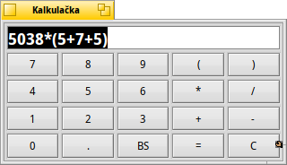

Kalkulačka
Kalkulačka
| Panel: | ||
| Umiestnenie: | /boot/system/apps/DeskCalc | |
| Nastavenia: | ~/config/settings/DeskCalc_settings |
Kalkulačka je jednoduchá kalkulačka, ktorá má ale niekoľko príjemných funkcií, ktoré nie sú zrejmé pri prvom pohľade.
Kalkulačka rozumie oveľa viac veciam, než naznačuje jej jednoduchá klávesnica.
Okrem operátorov , -, *, /, %, ^ a konštánt pi a e sú podporované nasledujúce matematické funkcie:
!, acos, asin, atan, atan2, cbrt, ceil, cos, cosh, exp, floor, log, log10, pow, sin, sinh, sqrt, tan, tanh.Kliknutie pravým tlačidlom poskytuje nasledovné možnosti:
Automaticky aktivuje numerickú časť klávesnice pri spustení Kalkulačky. Prepne medzi jednotkami uhlov rad/deg. ALT 0 Minimalistické zobrazenie, ktoré skrúva numerickú klávesnicu. ALT 1 Štandardný vzhľad Kalkulačky. ALT 2 Zobrazí ďalšie tlačidlá na pokročilé výpočty. Čo sa týka vstupu od používateľa, Kalkulačka je pomerne tolerantná:
/, :, \\ sú všetky interpretované ako operátory delenia,
*, x sú prijateľné symboly pre násobenie.
Tiež si prosím buďte vedomí, že . aj , sa považujú za symboly desatinnej čiarky, čo znamená, že ich nesmiete použiť ako oddeľovače tisícov.Kalkulačku môžete zmeniť na veľkosť, aká vám vyhovuje a potom ju dať ako Replikant na Plochu pretiahnutím symbolu v pravom dolnom rohu. Uistite sa, že v Paneli je aktivované.
Klávesnicu možno vyfarbiť potiahnutím a pustením akejkoľvek farby, napr. z programu Icon-O-Matic.
Môžete sa presúvať dopredu a dozadu v histórii výpočtov pomocou ↑ a ↓.
Môžete vybrať obsah Kalkulačky a potiahnuť a pustiť ho do akejkoľvek aplikácie. Alebo ho pustíte do okna Trackera alebo na Plochu a textový súbor s daným obsahom sa tam vytvorí.
Ešte lepšie, opak je tiež možný:
Vytvorte si výbery, ako je popísané, v rôznych častiach výpočtov a vráťte sa k nim pomocou potiahnutia a pustenia ich späť do Kalkulačky.
Alebo potiahnite a pustite priamo z emailu do Kalkulačky.Kalkulačku je možné používať v Termináli. Jednoducho uveďte výraz v dvojitých zátvorkách, napríklad:
~> DeskCalc "sin(45)*(cos(12)+3.45)" 3.65365546732025461817951947270058
Pozn.: Pri použití v Termináli bude Kalkulačka vždy používať radiány ako jednotky trigonometrických funkcií.